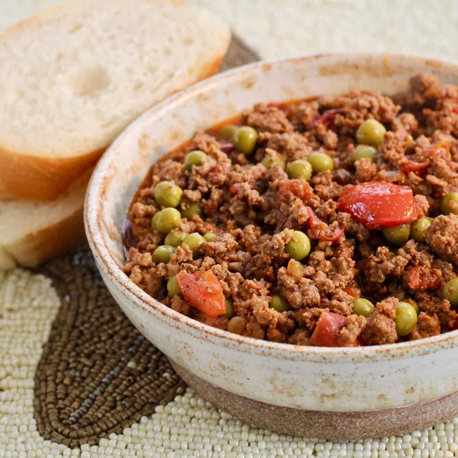

Pakistani Ground Beef Curry

Description
Ground beef curry is total comfort food. Better yet, it is super easy to make and the results are awesome!
The recipe creator danie says this curry, made with an array of spices you're sure to have on hand, has been a family favorite for years.
Ingredients
- 6 tablespoons olive oil
- 1 small onion, diced
- 1 pound ground beef
- 2 medium tomatoes, chopped
- 1 tablespoon curry powder
- 1 teaspoon paprika
- 1 teaspoon salt
- ¾ teaspoon black pepper
- ½ teaspoon chile powder
- ¼ teaspoon cayenne pepper
- 1 (8.5 ounce) can peas, including liquid (Optional)
Index Page